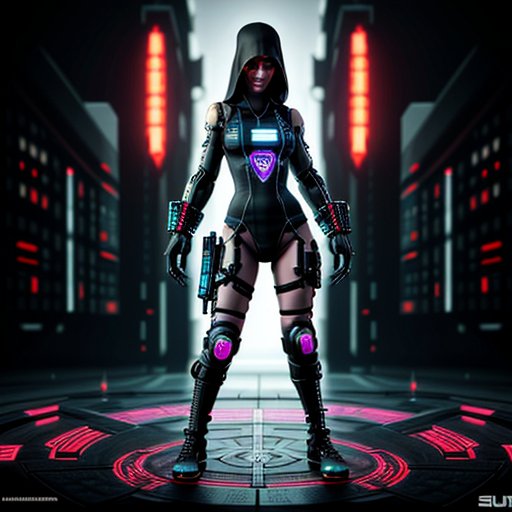
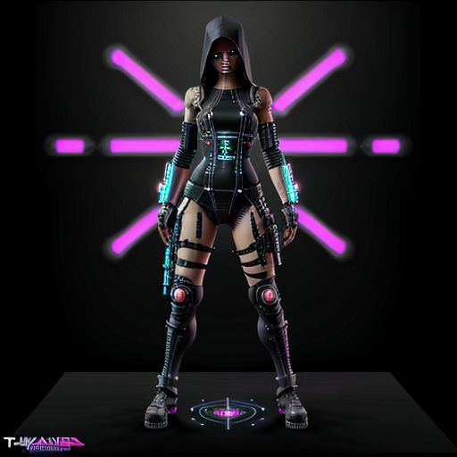
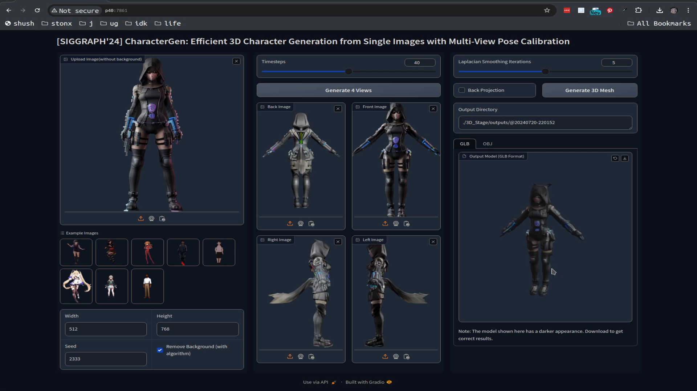
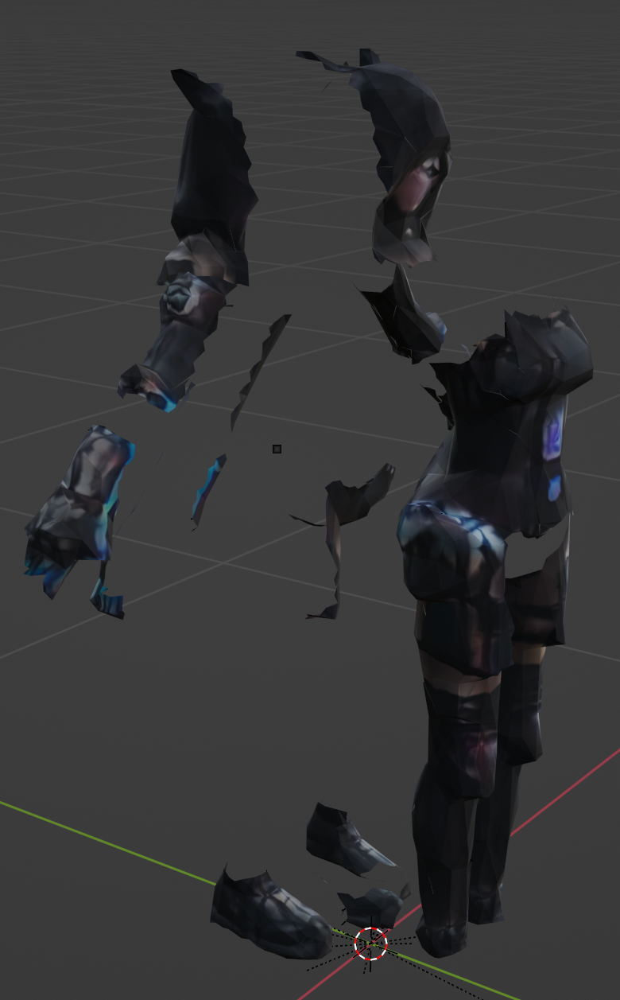
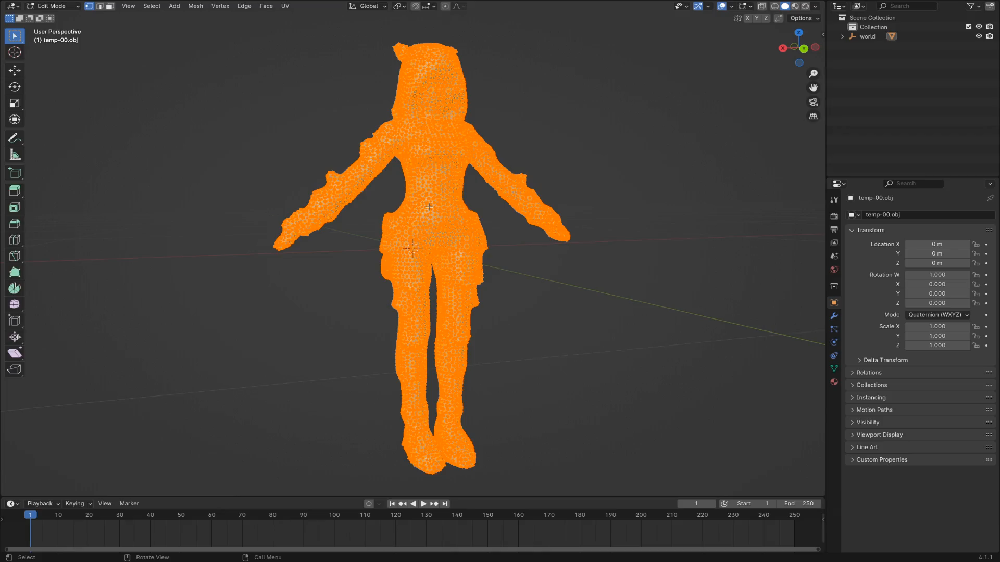
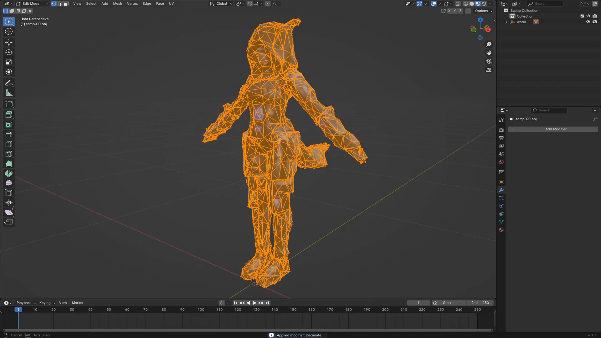
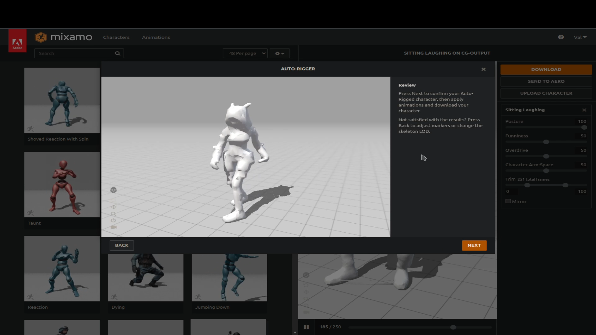
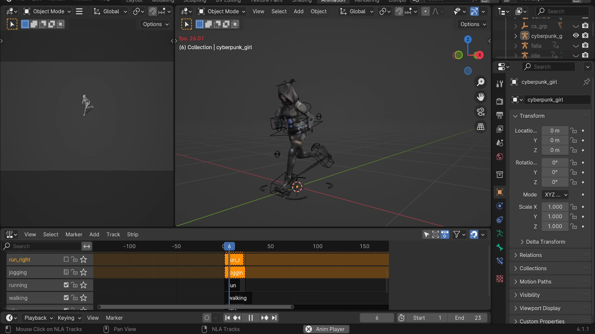
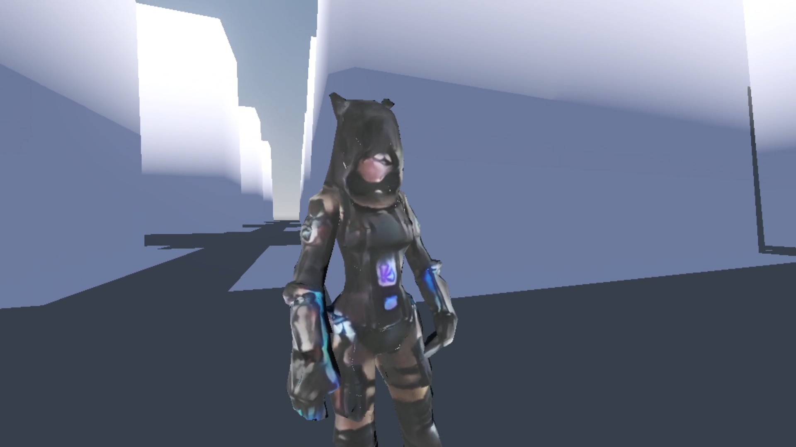

Overview
Here are a number of different Gaming and characters desigin and animation work I’ve done. Some of the projects are still private repositories I’m working towards making public. There’s quite a back log to catch up on, so please be patient!
Scaletris
 Scaletris is a classic single player reaction game where you advance levels and earn points by scaling objects to match them with their pair. Loosely inspired by Tetris, Scaletris, instead of rotating and positioning the objects, you scale them up or down to match identical pairs. The levels progress in difficulty by requiring more matched pairs, faster-falling objects, and having an increased number of sizes available (from two up to five sizes in the Classic style).
Scaletris is a classic single player reaction game where you advance levels and earn points by scaling objects to match them with their pair. Loosely inspired by Tetris, Scaletris, instead of rotating and positioning the objects, you scale them up or down to match identical pairs. The levels progress in difficulty by requiring more matched pairs, faster-falling objects, and having an increased number of sizes available (from two up to five sizes in the Classic style).
Scaletris comes in two play styles: Classic and Quest!
Classic mode focuses on the core mechanics and each level is based on a different concept of “Scale”, as outlined in the game challenge. Each level has a special bonus object which matches the level background. These bonus objects must be collected in a special area on the right hand side of the play field, underneath the score board. Collect enough of them and earn a bonus level. Collecting only one costs you a life and you get to replay the level. Don’t collect any and the game is over!
Quest mode introduces red enemy blocks and green ally blocks. Matching allies will remove one enemy block from the play area. The bonus item is always a yellow block with a pouch full of jingly coins! Collect 3 of them and earn a bonus level, there is no penalty for not collecting them.
In both modes, successfully clearing a bonus level will earn you an extra life (up to 5) which lets you replay failed levels.
Beware! If you run out of lives, the game is over!
Scaletris is on GitHub as well as on itch.io
Cyberpunk Assassin Girl Project: AI Character Generation Workflow
Introduction
Inspired by a project that came across Reddit that generates 3D characters from example images. Let’s embark on an exciting journey of creating a cyberpunk assassin girl character using Stable Diffusion for model generation, followed by animation via Mixamo and integration into the Godot game engine. The final result showcases impressive potential even though it’s currently at a slightly lower resolution.
Please see credits for details.
Overview
- Initial character from stable diffusion text-to-image
- Refine the pose uing image-to-image
- Generate the 3D Model using CharacterGen
- Cleanup in Blender and export as FBX
- Animate with Mixamo
- Combined the animations in Blender and export as GLB
- Create Godot Demo
Step-by-Step Process
1. Initial Image Generation with Stable Diffusion
Imagine an example image of a character, and create a stable diffusion prompt for 3D model generation.
Stable Diffusion Prompt: "Full front view view of a cyberpunk assassin girl in a ((t-pose)) on a (solid black background), full body"

2. Refine Initial Image with Stable Diffusion
Iterate through rerolls to achieve a suitable starting pose for the generated character model using Stable Diffusion or an alternate technique if needed.

3. Generate the 3D Model using CharacterGen
The character generation itself was super fast and it looks pretty good. 
4. Cleanup and FBX Export
 - Decimate the high-poly count model in Blender for better performance during animation exporting while maintaining an appealing look. - Refine the character focusing on removing unwanted elements such as the tail.
 
Another quirk to the model is that it is in multiple sections! Happily this didn’t impact the downstream activities
5. Animate the Character with Mixamo

6. Combine the Animations in Blender into NLA strips and re-export to GBL

7. Godot demo of the character.

Results & Future Improvements
The final character generation and animation process resulted in an impressive cyberpunk assassin girl model, despite the initial lower resolution. The project holds great promise for future iterations with higher-resolution models and more refined animations.
The CharacterGen project has a lot more to it than explored here. It’s also interesting to imagine more fully automated workflows.
Bonus timeline-for-shotcut.py can be used to export timeline for clips in playlists in Shotcut MLT files.
Godot Pause Tutorial
Animation: Dancing Coffee Cup
Animation: Funny Horse Gallop
Animation: Happy Hippy
Animation: Gir Running
Bit of fan art of the character Gir from Invader Zim.